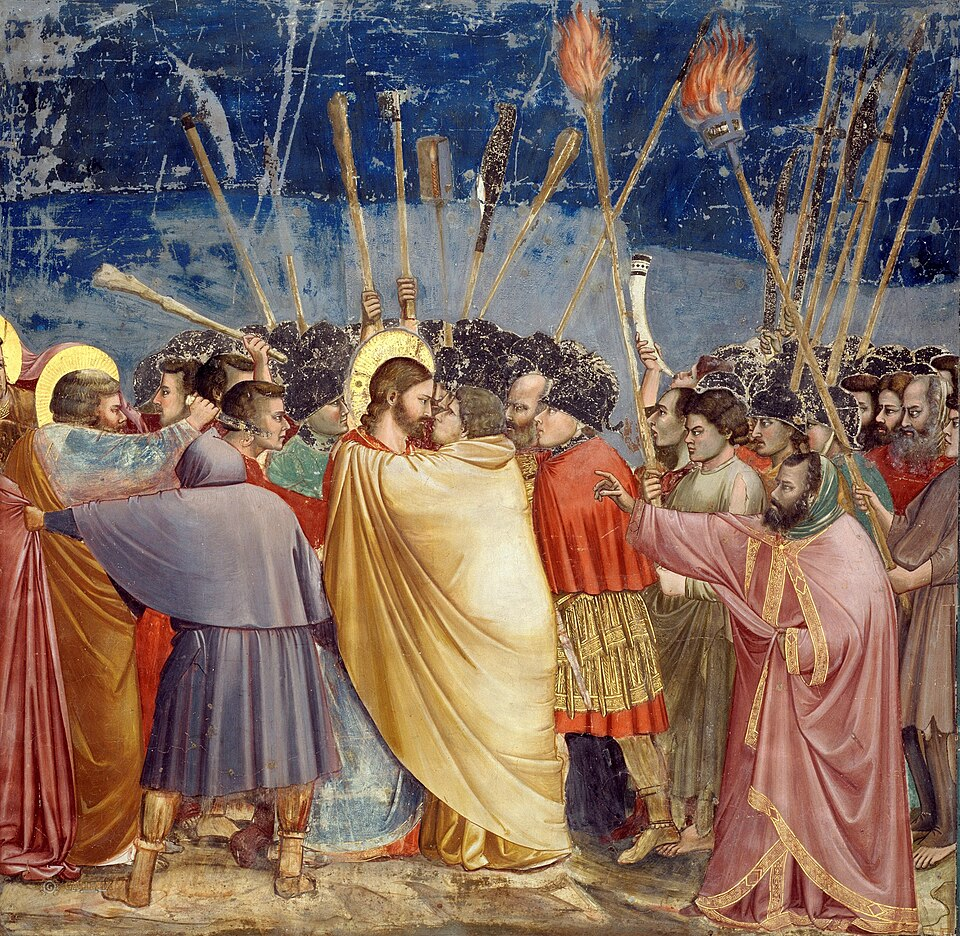
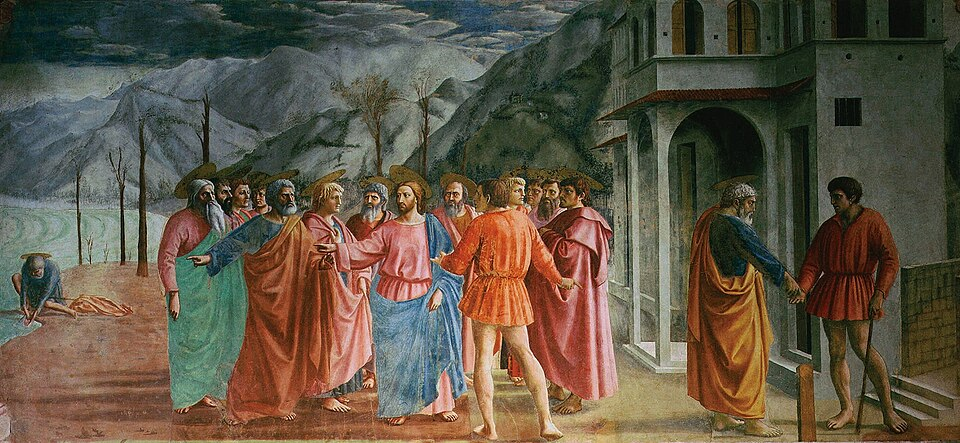
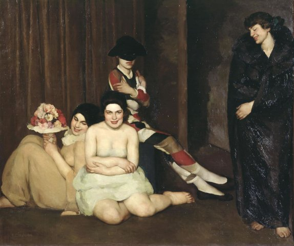
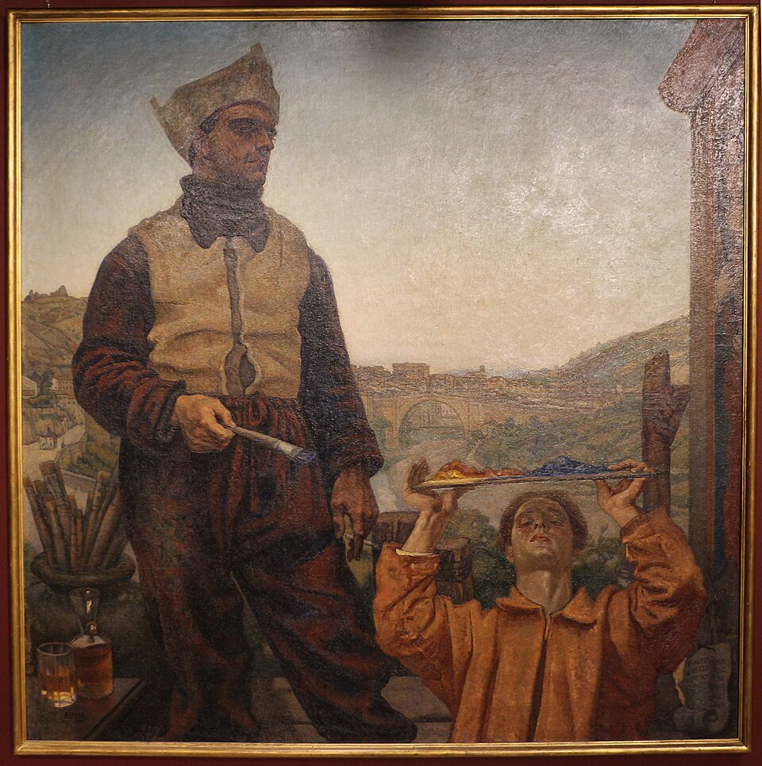
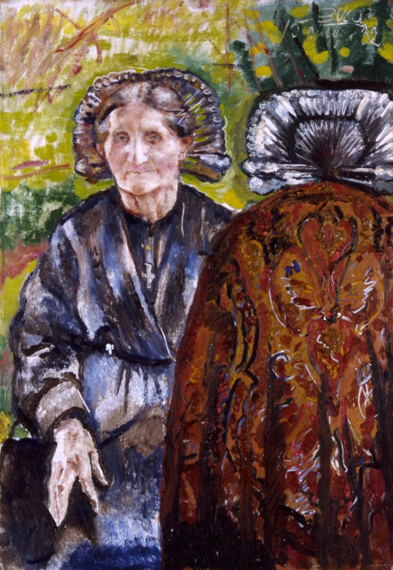
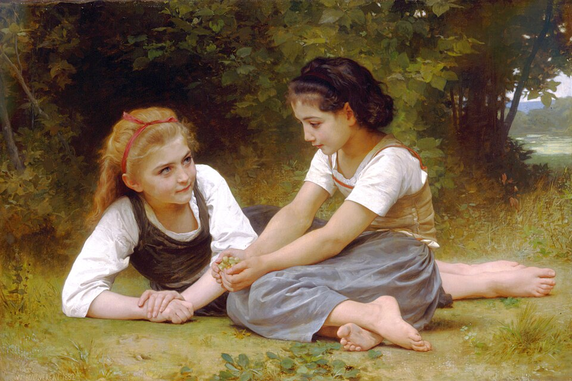

図解：ノヴェチェント
ノヴェチェントの成立と展開
- 1921


サルファッティの批評バロックを「肥満」と非難
14〜15世紀の美術を理想に - 1922〜23

7人の画家が結成サルファッティのサロンから
1923年に最初の展覧会 - 1924〜26

政権の後援で拡大ムッソリーニは秩序の印象に利用
1926年展に110人超が出品 - 1926〜38

方向を欠き衰退ブッチらが離脱
1938年サルファッティ亡命
大戦前の前衛と何が違うか
具象性を強調伝統伝統を切り捨てる古典を現代的に取り入れる
単に過去へ戻るのではない美の基準速度と破壊の美学古典的な構造美
何を描くかを明確に政権の利用技術を他国へ示す秩序の保護者を演出
破壊者のイメージを変える
重要人物
運動をつくった人
ノヴェチェントの画家
- アンセルモ・ブッチ画家《画家たち》の作者。1926年展を最後に離れる
- エミリオ・マレルバ画家発足時の7人の一人。46歳で病没
- ウバルド・オッピ画家発足時の一人だが、早くも離脱
- マリオ・シローニ画家岩のような人物像。最も深く政権の宣伝に関与
『ヴァローリ・プラスティチ』
政治の側の人


古典を現代へ取り入れる
戦間期イタリアのもう一つの運動
動画 0:52～ノヴェチェント、正式にはノヴェチェント・イタリアーノは、1920年代のイタリアで起こった芸術運動です。戦間期の芸術を理解する上で、第2未来派と並ぶ重要な運動となりました。未来派は機械や技術の発展を称え、伝統を切り捨て、新しい未来の美を求めました。ムッソリーニの台頭で活動しやすくなった1920年代以降は、第2未来派と呼ばれ、表現の幅を広げていきます。
対してノヴェチェントは、第一次世界大戦前の前衛的な傾向へ反発しました。フランスで台頭したピカソらのキュビスムや、イタリアの未来派から距離を取り、形態を明確にし、具象性を強調する作品を制作します。ピカソも戦後の一時期、具象表現へ戻っていました。これらは、ヨーロッパで起きた「秩序への回帰」、リターン・トゥ・オーダーの流れに位置付けられます。戦争を目の当たりにした芸術家たちによる、古典の再評価でした。
同名作の所蔵寸法が異なり個体未確定。1961没原作の条件も未確認。米国PDのみでは採用せず保留。https://www.archiviomariosironi.it/mario-sironi/biografia/
《学生》
- 作者
- マリオ・シローニ
- 制作時期
- 1924年（画面表記）
- 所在地・所蔵
- 掲載個体の所蔵先未確定
- 素材・形式
- 油彩・カンヴァス
- 原題
- L’allieva
出典・画像について

《仮面》
- 作者
- ジャン・エミリオ・マレルバ
- 制作時期
- 1922年
- 所在地・所蔵
- 国立近代美術館、ローマ（2537）
- 素材・形式
- 油彩・カンヴァス
- 原題
- Maschere
出典・画像について
動画ではエミリオ・マレルバと表記。作品情報には署名と文化財台帳のジャン・エミリオ・マレルバを記載。
画像出典：Gian Emilio Malerba
Public domain / PD-Art / PDM
作品情報：作品・画像・利用条件 · 所蔵館の作品ページ
古典の再評価と「秩序への回帰」
動画 2:10～19世紀後半、特に印象派以降は、伝統を重視する芸術への反発が続き、アカデミーが規範とした古典の評価も揺らいでいました。芸術を社会や文化の鏡と捉え、伝統の軽視や実験的な前衛表現を重んじる文化が、社会の不安定さや倫理観の変化と結び付き、戦争の惨禍につながったと見る芸術家や批評家も現れます。こうした見方から、古典を再評価する流れが生まれました。
ただし、彼らは単に過去へ戻ろうとしたのではなく、古典を現代的な方法で描く点で革新的であろうとしました。アカデミーは、正確な遠近法、人体比率、造形などの技術的なリアリズムを徹底し、その強制が個性や新しい表現、創造性を抑える問題を抱えていました。秩序への回帰は、何を描いているかは明確にしつつ、リアリズムに縛られない表現を探ります。古典の技術をそのまま模倣するより、その明快さを評価したのです。


画像を拡大 ＋《ナッツの採集者たち》
- 作者
- ウィリアム＝アドルフ・ブグロー
- 制作時期
- 1882年
- 所在地・所蔵
- デトロイト美術館（54.458）
- 素材・形式
- 油彩・カンヴァス
- 原題
- Les noisettes
出典・画像について
写実的に描いても、形を簡略化しても、見る人に対象が伝わればよいという方向でした。古典のよいところを、現代的に取り入れる運動だったのです。ノヴェチェントはそのイタリア版ですが、他国の秩序への回帰とは異なり、ファシズムとの明確な結び付きがありました。伝統を重んじるノヴェチェントと、伝統を破る未来派という反対の傾向が、同じ政治体制と結び付いた理由が重要になります。
雑誌と批評家の議論
『ヴァローリ・プラスティチ』の役割
動画 4:08～戦争終結後のローマで、1918年から1922年まで発行された美術雑誌が『ヴァローリ・プラスティチ』です。「造形の価値」といった意味で、プラスティチは素材のプラスチックを指していません。芸術家で収集家のマリオ・ブローリオと、同じく芸術家の妻エディタが刊行しました。何が描かれているかを明確にする造形に価値を置き、デ・キリコ、カルロ・カッラ、ジョルジョ・モランディらが寄稿しています。
File:Valori Plastici vol 002 no 02 front cover.jpgという1921イタリア版候補は同版・表紙か不明、代用しない。号・作者・条件未確認。
《『ヴァローリ・プラスティチ』外国向けフランス語版表紙（号未確定）》
- 作者
- 表紙作者未確定
- 制作時期
- 発行号未確定
- 所在地・所蔵
- 掲載個体・所蔵未確定
- 素材・形式
- 印刷図版・雑誌表紙
- 原題
- Édition pour l’étranger de Valori Plastici, Revue d’Art
出典・画像について
カッラは大戦前、未来派に属して形を崩す絵を描いていましたが、戦中にデ・キリコと出会い、形而上絵画へ転じました。速度と破壊の美学から距離を置き、落ち着いた画風へ変化したのです。こうした画家たちは、古典的な構造美に基づく造形の回復を理論として主張し、雑誌を通じて古典を再評価する機運が強まっていきました。
原画個体・条件未確定。鉛筆習作やバッラのバルコニーを走る少女と区別。1966没原作の米国PDだけでは採用しない。
《バルコニーの女（同時性）》
- 作者
- カルロ・カッラ
- 制作時期
- 1912年（画面表記）
- 所在地・所蔵
- 現所蔵先未確定
- 素材・形式
- 油彩・カンヴァス
- 原題
- Simultaneità – La donna al balcone
出典・画像について
公式検索で情報確認。1966没原作と写真の再利用条件未確認、限定探索で保留。
《ロトの娘たち》
- 作者
- カルロ・カッラ
- 制作時期
- 1919年
- 所在地・所蔵
- Mart、ロヴェレート（Volker Walter Feierabend - Stiftungコレクション）
- 素材・形式
- 油彩・カンヴァス
- 原題
- Le figlie di Loth
出典・画像について
作品情報：作品・画像・利用条件 · 所蔵館の作品ページ
バロック論争とサルファッティの理想
動画 5:18～当時の雑誌は、単に読むだけのものではありませんでした。別の批評家の主張へ応答する批評が寄せられ、寄稿者が互いの意見を参照しながら議論しました。造形を重視する意識を共有していても、具体的にどう考えるかは異なったのです。編集部へ集まって意見を交わし、その内容を誌面に載せることもありました。
1921年には、17世紀のバロック美術をどう評価するか、活発な論争が起こります。強い明暗表現を特徴とし、ローマに発したバロックを、ルネサンス以後に生まれた国民的な美術として受け入れるべきか、という議論でした。ここに、女性批評家マルゲリータ・サルファッティが、「Il Seicento（17世紀）」と題する、強い調子の批評を寄せました。
 画像を拡大 ＋
画像を拡大 ＋
《聖マタイの召命》
- 作者
- カラヴァッジョ
- 制作時期
- 1599～1600年
- 所在地・所蔵
- サン・ルイジ・デイ・フランチェージ聖堂、コンタレッリ礼拝堂、ローマ
- 素材・形式
- 油彩・カンヴァス
- 原題
- The Calling of Saint Matthew
出典・画像について
彼女はバロック芸術を「肥満」と非難しました。強い明暗が物体の輪郭を曖昧にし、形の締まりを失わせること、建築の過剰な装飾が本来の形をぼかすことを問題にしたのです。それに対して理想としたのが、ジョットやマザッチョに代表される14～15世紀のイタリア美術でした。技法に溺れず、線で引き締まり、他国の影響を受けていないと彼女が捉えた美術こそ、純粋なイタリアの美術だと主張します。同じイタリア起源でも、バロックより初期ルネサンスを支持したのです。

《ユダの接吻（キリストの捕縛）》
- 作者
- ジョット
- 制作時期
- 1304～1306年
- 所在地・所蔵
- スクロヴェーニ礼拝堂、パドヴァ
- 素材・形式
- フレスコ画
- 原題
- Kiss of Judas
出典・画像について

《貢の銭》
- 作者
- マザッチョ
- 制作時期
- 1424～1428年
- 所在地・所蔵
- サンタ・マリア・デル・カルミネ教会、ブランカッチ礼拝堂、フィレンツェ
- 素材・形式
- フレスコ画
- 原題
- The Tribute Money
- 動画の年代
- 1425～1427年
出典・画像について
7人の画家と政権の思惑
7人の画家によるノヴェチェント
動画 7:04～サルファッティは自宅でサロンも開き、芸術家が意見を交わす場を提供しました。そこに集まった7人をまとめ、1922年に結成したのがノヴェチェントです。アンセルモ・ブッチ、エミリオ・マレルバ、アキーレ・フーニ、レオナルド・ドゥドレヴィル、ピエトロ・マルッシグ、マリオ・シローニ、ウバルド・オッピが参加しました。
トレチェント（14世紀）、クアトロチェント（15世紀）に並ぶ、イタリア芸術の偉大な世紀にしようという野心を込め、自分たちをノヴェチェントと呼びました。サルファッティと画商リーノ・ペーザロの支援を受け、共通する方向へ活動を始めます。1923年3月、ペーザロが営むガレリア・ペーザロで展覧会を開き、これが実質的な出発点となりました。身内や美術関係者に向けた小規模な展示でしたが、会場を訪れ、演説したのがムッソリーニでした。
同じ画廊の1929サルトリオ展カタログ由来資料は別で除外。作者・写真年・原資料・条件未確定。説明の1923を撮影年と断定しない。
《ガレリア・ペーザロの展示室写真（1923年展の説明時に使用）》
- 作者
- 撮影者未確定
- 制作時期
- 不明
- 所在地・所蔵
- ガレリア・ペーザロ、ミラノ（原資料の所蔵先未確定）
- 素材・形式
- 白黒写真
- 動画の年代
- 1923年展の説明時に表示
出典・画像について
動画の年代表記：1923年展の説明時に表示。
ムッソリーニとマリネッティの決裂
動画 8:03～ベニート・ムッソリーニは、1922年のローマ進軍によって政権を獲得したファシストの党首です。支援者サルファッティは彼の愛人でもありました。1919年にファシストの前身である戦闘ファッシを結成し、戦後のストライキを暴力で抑え込んだムッソリーニには、未来派と近い面もあります。それでも、なぜ異なる美術を支えたのでしょうか。
1919年後半から1920年頃、ムッソリーニと未来派の創始者マリネッティは仲たがいしていました。戦闘ファッシがストライキを鎮圧する前、1919年11月の選挙で1議席も取れず大敗し、その原因をめぐる意見が分かれたのです。マリネッティは、妥協したから敗れたのであり、もっと過激になるべきだと訴えました。一方、ムッソリーニは反王政・反体制の過激思想では権力を得られないと考えます。1920年の第2回ファシスト大会でマリネッティは離れ、二人は一時的に別の道を歩みました。
破壊者から秩序の保護者へ
動画 9:20～ムッソリーニが過激路線を避けようとしたのは、革命的な暴力では保守層の支持を得られないと考えたためでした。しかし、ストライキを起こす革命路線の人々に保守層が危機を感じる中、皮肉にも暴力で鎮圧することが支持につながりました。暴力で何かを変えるという行動は、結果的に未来派を肯定することにもなります。
1922年のローマ進軍で国王から首相に指名され、ファシストが政権を握ります。ただしムッソリーニは、自分たちが野蛮な党として一部の人に不信感を抱かれていることを理解していました。野党の過激さと、政権を担う側への期待とは異なります。1925年の演説では、暴力が外科的で、時宜を得て、必要不可欠であるなら道徳的だ、という主張をしました。暴力を理性的に管理すれば正当化できる、という当人の考えでした。
ムッソリーニは、ストライキの抑圧や進軍は国家の再建と秩序の回復のために使っただけだ、と位置付けました。そこで目を付けたのが、サルファッティが演出したノヴェチェントです。伝統や秩序を守るという印象を作り、破壊者から保護者へと自らのイメージを変えようとしました。ただし、彼女がムッソリーニに合わせて古典を支持したわけではありません。ルネサンスの伝統にイタリアの誇りがあると信じ、ムッソリーニを教養ある君主に育てることで、その伝統を守ろうとしたのです。異なる思惑が重なっていました。
展覧会の拡大と運動の問題
ビエンナーレと政権後援の大規模展
動画 10:59～1924年、国際展ヴェネツィア・ビエンナーレに画家たちが出品しました。代表的な作品の一つが、アンセルモ・ブッチの《画家たち》です。ウバルド・オッピを除く6人には特別展示が用意されるという厚遇がありました。オッピは発足時の一人でしたが、早くも離脱しています。詳しくは分からないものの、仲間と理念が合わなかったらしいとされます。

《画家たち（足場の上の自画像）》
- 作者
- アンセルモ・ブッチ
- 制作時期
- 1921～1924年
- 所在地・所蔵
- ペーザロ・ウルビーノ県所有、クアドレリア・チェザリーニ、フォッソンブローネで展示
- 素材・形式
- 油彩・カンヴァス
- 原題
- I pittori (Autoritratto sui ponteggi)
出典・画像について
掲載写真は原画全図。ビエンナーレの記録では1921年とも表記。
画像出典：Francesco Bini
CC BY-SA 4.0（写真、原作品PD）
作品情報：作品・画像・利用条件
制作メモ
1921～1924年は確認した展覧会資料の制作期間。
1926年、第1回ノヴェチェント・イタリアーノ展が官の後援で大規模に開かれ、110人を超える画家が展示しました。その背景には、1924年の総選挙でのファシストの大勝と、1925年のムッソリーニの独裁宣言があります。サルファッティは彼を英雄のように描く伝記『ドゥクス』を執筆し、国外にも出版して、魅力的な指導者として大きく見せようとしました。政権の強力な後援を得て、ノヴェチェントを新しいイタリア芸術として国際的に評価させようとしたのです。
刊本対応するが表紙作者・スキャン個体・利用条件未確認。刊年だけで権利を断定しない。
《第1回ノヴェチェント・イタリアーノ展カタログ（表紙）》
- 作者
- 表紙意匠作者未確定
- 制作時期
- 1926年
- 所在地・所蔵
- ミラノ、パラッツォ・デッラ・ペルマネンテ（掲載個体所蔵未確定）
- 素材・形式
- 印刷物
- 原題
- Catalogo della prima mostra del novecento italiano febbraio-marzo 1926
出典・画像について
統一した実践を欠く運動
動画 12:05～ノヴェチェントの運動は長くは続きませんでした。中心人物ブッチは1926年の展覧会を最後に徐々に離れ、マレルバは46歳で病没します。先に離れたオッピと合わせ、初期の7人のうち、2人の離脱と1人の死去によって3人を失い、勢いが落ちていきました。
大きな問題は、運動としての方向性が不明瞭だったことです。サルファッティは14～15世紀の美術、造形の重要性、過剰な明暗や装飾の否定を説きましたが、それをどう実践するかは統一されませんでした。これがノヴェチェントだといえる作風の核が明確でなく、参加者の方向はばらばらでした。こうした方向性の違いが、ブッチやオッピの離脱につながりました。1926年展には110人以上が出品しており、参加者それぞれの方向も異なっていたと考えられます。離れたブッチは表現主義的な作風へ転じており、集団に縛られず描こうとしたと考えることもできます。

《ブリアンツァの姉妹》
- 作者
- アンセルモ・ブッチ
- 制作時期
- 1932年
- 所在地・所蔵
- カリプロ財団美術コレクション、ミラノ（AI00212AFC）
- 素材・形式
- 油彩・板
- 原題
- Sorelle brianzole
出典・画像について
ブリアンツァ地方の姉妹。
画像出典：Anselmo Bucci
CC BY-SA 3.0（権利者承認・VRT確認済み）
作品情報：作品・画像・利用条件
制作メモ
原権利者の承認記録付きCC BY-SA3.0による財団提供画像。
未来派との関係、亡命と戦後
未来派との関係修復とサルファッティの失脚
動画 13:35～1924年、ムッソリーニが選挙で大勝すると、マリネッティが近づいて関係を修復しました。マリネッティは未来派を文化の中心に置きたく、ムッソリーニは自国の技術を他国へ示すために未来派が有用だと考えます。ノヴェチェントと未来派はともに国家芸術の座を狙いましたが、政権は片方だけに肩入れせず、双方の有用な部分を取り入れたのです。
1930年代にはムッソリーニに新しい恋人クララ・ペタッチが現れ、サルファッティとの関係が悪化し、彼女の影響力が低下しました。1932年のプロパガンダ展示「ファシズム革命展」では、企画や運営に彼女の名はありませんでした。展示室のレイアウトにはノヴェチェントのマリオ・シローニが関わりましたが、そこには未来派やモダニズムの影響が深く見られます。
同一習作・所蔵・素材・原作と画像の条件未確定、別設計図や完成展示写真で代用しない。
《ファシスト革命展展示室の習作（画面表記）》
- 作者
- マリオ・シローニ
- 制作時期
- 1932～1933年（画面表記）
- 所在地・所蔵
- 未確定
- 素材・形式
出典・画像について
人種法と亡命、戦後の執筆
動画 14:44～1938年、ナチス・ドイツとの関係が深まる中、政権はユダヤ人を排斥する人種法を制定しました。ユダヤ人だったサルファッティは命の危険を感じ、そのまま亡命します。影響力を持つ彼女がいなくなり、ノヴェチェントは事実上消滅しました。
サルファッティは1947年にイタリアへ帰国し、1955年に回想録『アクア・パッサータ』を書きました。戦前の活動や亡命生活をつづり、細々と執筆を続けましたが、ファシズムとの関係から影響力は乏しく、1961年に亡くなりました。
作品の評価と政治との関係
動画 15:23～参加した画家たちは、戦後、未来派と同様、ファシズムとの結び付きによって評価を落としました。その後は個々の画家の再評価も進んでいます。岩のように力強い人物像を描いたシローニは、ノヴェチェントの中で最も深くファシズムの宣伝に関わった画家でしたが、独特の画風自体は政治と切り離して評価されるようになっています。
同一個体と掲載画像条件未確認。1961没原作について写真自由ライセンス/米国PDだけでは広い条件確認とせず保留。
《労働者たち（画面表記）》
- 作者
- マリオ・シローニ
- 制作時期
- 1929～1933年（画面表記）
- 所在地・所蔵
- 未確定
- 素材・形式
出典・画像について
一方、ノヴェチェントという運動全体は、政治との関係を切り離して評価することが難しく、日本の書籍でも、美術史よりファシズム体制を理解する文化史の一部として扱われることがあります。造形の美を求め、大戦前の前衛から距離を置き、古典を再考した画家たちは、政治との関係から戦後非難を受けました。彼らは自分たちの表現を追い求めただけだったのかもしれません。
要点まとめ
- ノヴェチェントは1920年代のイタリアで、形態の明確さと具象性を重視した運動である。
- 秩序への回帰は、古典の技術をそのまま模倣するのでなく、明快さを現代的な表現へ取り入れようとした。
- 雑誌ヴァローリ・プラスティチは、造形や古典の評価をめぐる議論の場となった。
- サルファッティは、輪郭や形を曖昧にするとしてバロックを批判し、14～15世紀の美術を理想とした。
- 1922年に7人の画家がまとまり、1923年の展覧会が実質的な出発点となった。
- ムッソリーニは、伝統と秩序の保護者という印象を作るため、この芸術も利用した。サルファッティにも古典の保護という意図があった。
- 1926年展は110人以上へ広がったが、具体的な作風や実践は統一されず、離脱や中心画家の死去で勢いを失った。
- 政権は未来派とも関係を修復し、ノヴェチェントだけを国家芸術として支持したわけではない。
- サルファッティは1938年の人種法を受けて亡命した。個々の作品の再評価と、政治と結び付いた運動全体の評価は分けて考える必要がある。
確認問題
答えを考えてから開いてください。選択問題は選ぶとすぐ正誤と解説が出ます（選択肢の順番は開くたびに変わります）。各問題のリンクから該当の章や作品カードへ戻れます。
選択問題：0／4問回答・正解0
A. 一問一答答えを考えてから開く
問11922年にノヴェチェントをまとめた女性批評家は誰か。
答えを見る
問2造形の回復を議論し、1918～1922年に刊行された雑誌は何か。
答えを見る
問3サルファッティは、バロックよりどの時期のイタリア美術を理想としたか。
答えを見る
B. 4択選ぶとすぐ正誤と解説
問4秩序への回帰の説明として本文に合うものはどれか。
→ 本文で確認（古典の再評価と「秩序への回帰」）
問5ノヴェチェントの勢いが弱まった理由として挙げられるものはどれか。
→ 本文で確認（統一した実践を欠く運動）
問6ムッソリーニによる未来派とノヴェチェントへの対応はどれか。
→ 本文で確認（未来派との関係修復とサルファッティの失脚）
C. 図版問題画像を見て答える
問7この作品の作者と題名を答えよ。
答えを見る
問8この作品を描いた初期メンバーは誰か。
→ 作品カードで確認